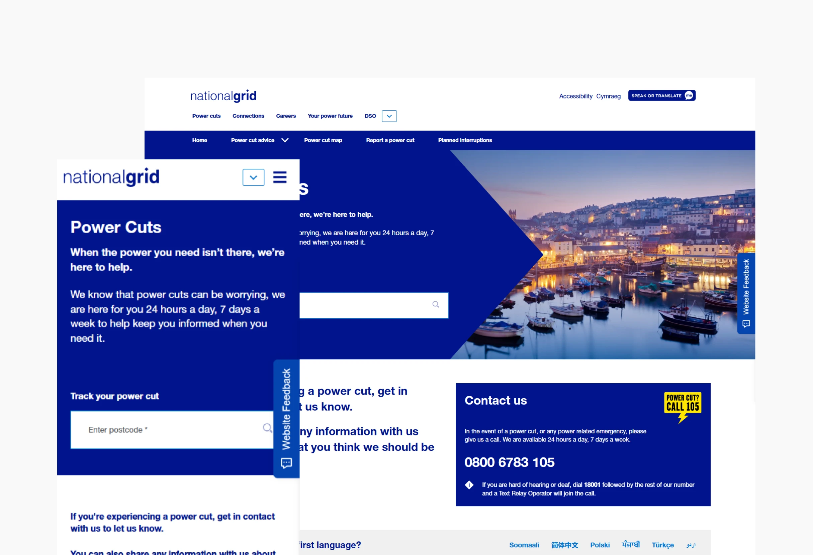
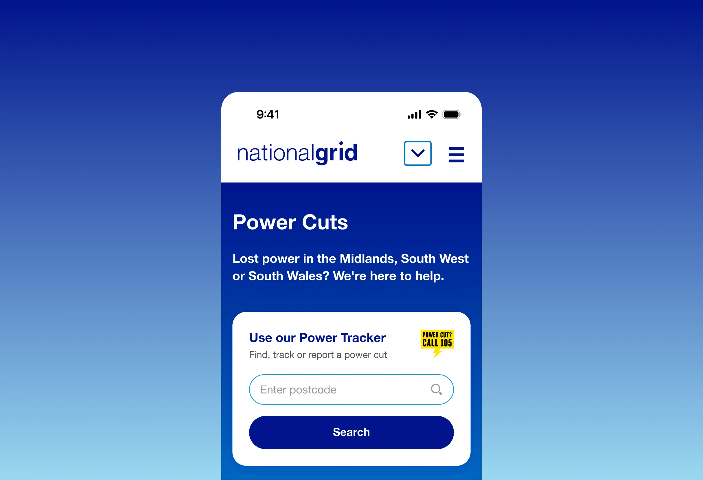
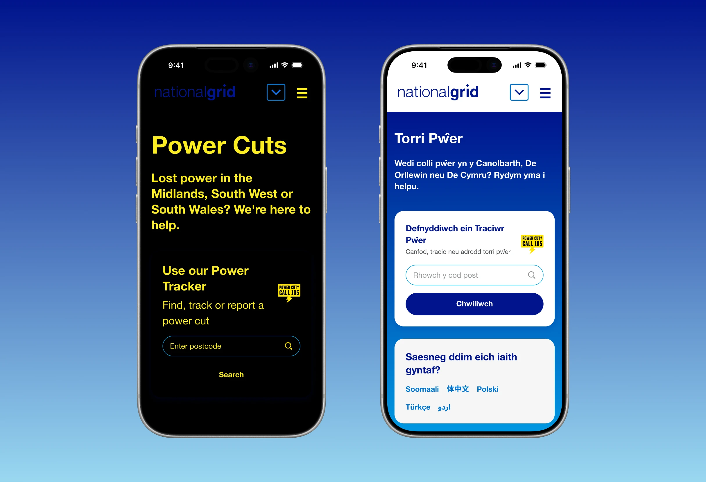
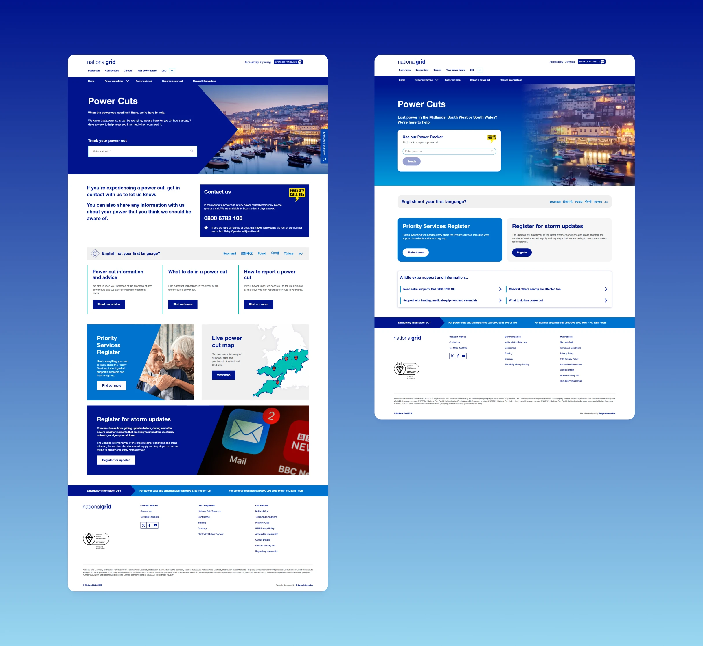
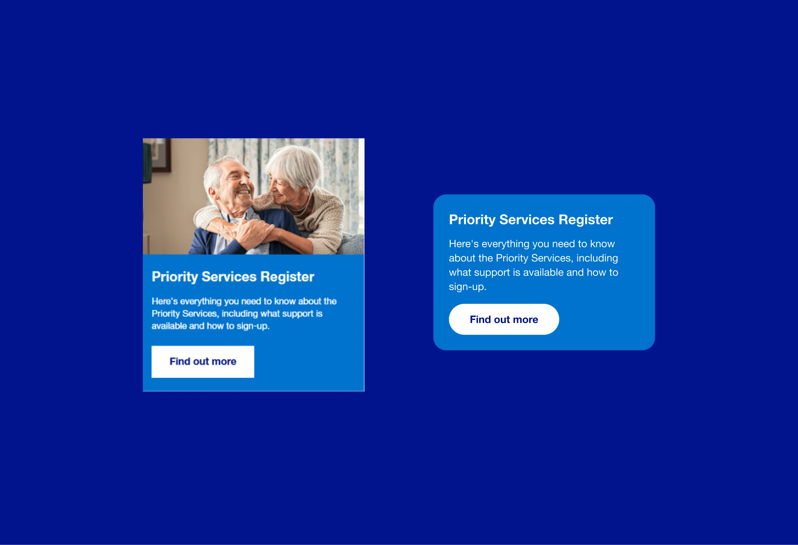
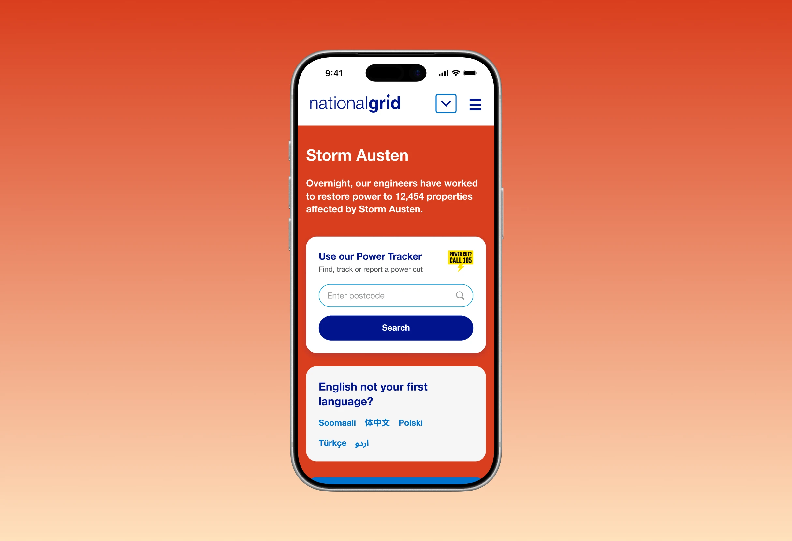
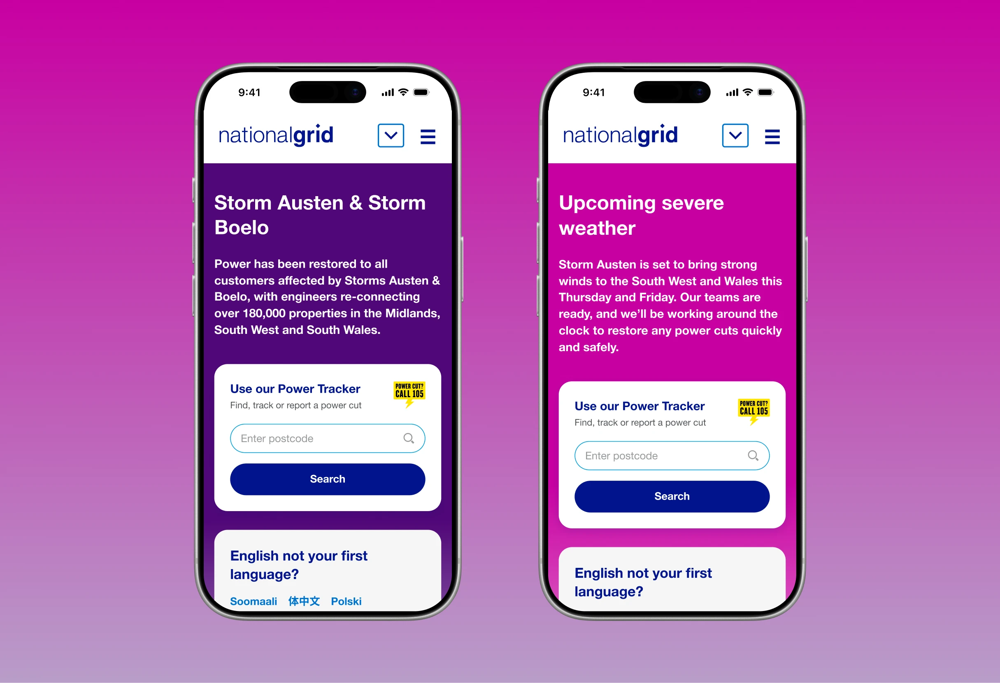
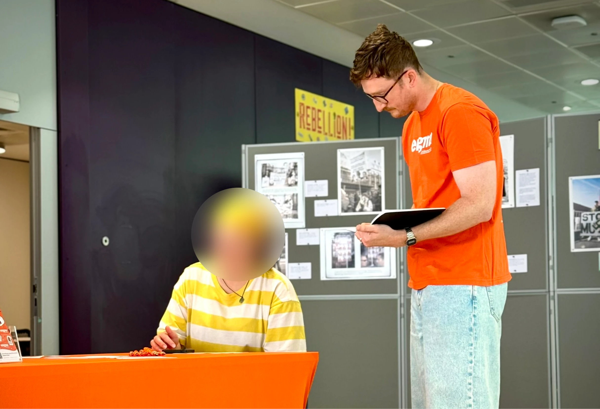

Don't have time to read it all?
Ofgem's customer survey showed people were struggling to find the postcode search on National Grid's power cut website. I redesigned the Power Cuts homepage to fix that. We cut a lot of content, reordered the page and built new panels in the updated brand style. It went live in October 2026.
The Problem
The search was there, people just didn't know it was for them
The page gets over 2 million visits a year, mostly on mobile. Ofgem's customer satisfaction survey (BMCS), which comes with financial rewards and penalties, flagged that people couldn't find the search.1 In customer workshops, people also told us there was too much 'waffle'.
The problem boiled down to 2 main issues:
- The search was labelled "Track your power cut", which only speaks to people who've already reported one.
- The very next thing on the page told customers to phone.

The project goals were to make the search easier to find, cut the content back and apply the new brand guidelines, all within the existing CMS.
Search Panel Redesign
One panel for everything
I redesigned the search panel to make it clearly the main action on the page. It now sits in its own white card, separate from the rest of the hero, and the label says it's for finding, tracking and reporting a power cut, not just tracking one. I also added a proper Search button.
We removed the "call us" section that came straight after the hero, so the page no longer points people to the phone first. The 105 number is still there as a small badge inside the panel.

Accessibility & Language
Accessible and bilingual by design
The new design also had to work with Recite Me, the accessibility toolbar behind the "Speak or translate" button, which lets people have the page read aloud, translate it, or change the font and colours. And because NGED covers South Wales, it had to work in Welsh too, where text often runs longer than in English.

Page Structure
Putting the important things first
I reordered the rest of the page by priority. The Priority Services Register and storm updates moved up. Lower-priority content moved down or was removed.

Cutting it back and then cutting again
We cut the copy down to what people need during a power cut. After that we kept asking what else could go. Early versions kept the panel images on mobile, but they weren't adding anything, so we took them out.
Working within the CMS
New panels built for reuse
The Power Cuts pages had square corners, but the incident pages had moved to rounded corners and a different gradient. The incident page panels were built only for incidents, so we made new ones in the updated style. Those panels and styles can now be reused across the Power Cuts site. They have already been adopted by planned power cuts.

Site mode switching for 'Storm mode'
In severe weather the page switches to storm mode, with a different header colour, changes to content and a live feed of updates. Those at NGED with the correct CMS permissions can toggle the page mode easily and amend any content as required. Most recently Storm Austen and Boelo triggered that mode change.


A new power cut reporting form
I also worked on the power cut reporting form, which is where people go next. Another designer created the UI. I designed the flow around it and tested it with the public.

The new form saves 30 seconds per report. In its first month a storm brought 13,000 reports through it, which works out at roughly 100 hours saved.
What's next
We'll compare online and phone reports, and the BMCS feedback, against the year before launch.